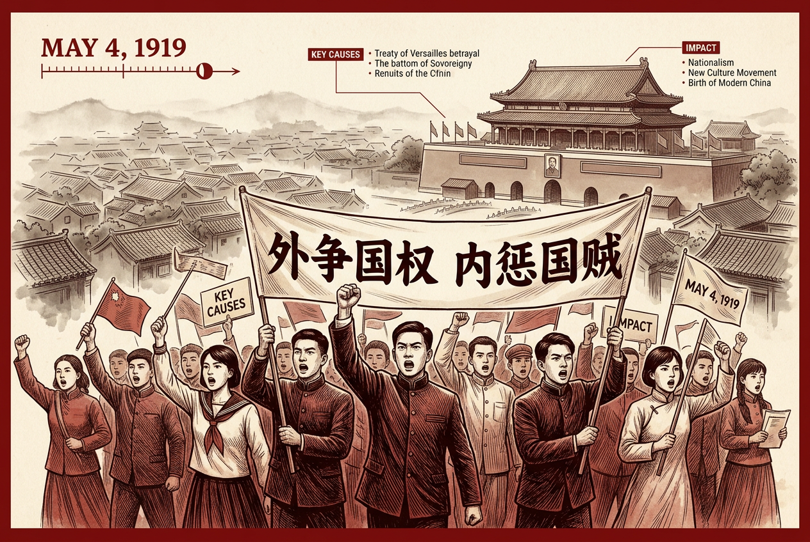

五四运动
从巴黎和会到觉醒年代 · 新民主主义革命的起点
🎯 学习目标
📖
背景与起因
了解巴黎和会与五四运动爆发的原因
📍
经过与口号
掌握五四运动的时间、地点、口号与主要活动
🔍
历史意义
理解五四运动作为新民主主义革命开端的意义
🔗
思想传播
认识五四运动与新文化运动、马克思主义传播的关系
🗺️ 五四运动（1919）
点击时代按钮切换疆域版图；悬停高亮边界；点击红色城市标记查看详情。
📝 前测
五四运动爆发于哪一年？
A. 1911年
B. 1919年
C. 1921年
D. 1912年
📖 模块一：五四运动的背景
国际背景
- 第一次世界大战期间，欧洲列强无暇东顾，日本趁机加强对中国的侵略
- 俄国十月革命的胜利，为中国送来了马克思主义
国内背景
- 政治：北洋军阀统治黑暗，阶级矛盾尖锐
- 经济：民族资本主义进一步发展，工人阶级队伍壮大
- 思想：新文化运动解放思想，为五四运动奠定思想基础
导火索：巴黎和会
1919年1月，第一次世界大战的战胜国在法国巴黎召开"和平会议"。作为战胜国之一，中国代表提出：
- 废除外国在中国的势力范围
- 撤退外国在中国的军队
- 归还德国在山东的特权
但会议拒绝了中国的要求，决定将德国在山东的权益转让给日本。消息传到国内，群情激愤。

📍 模块二：五四运动的经过
第一阶段：北京（学生为主力）
1919年5月4日
天安门集会
北京三千余名学生集会于天安门前，高呼"外争主权，内除国贼"等口号，随后举行示威游行。
1919年5月4日
火烧赵家楼
游行队伍前往东交民巷使馆区抗议受阻后，转而前往赵家楼（曹汝霖住宅），学生焚毁曹宅，痛打章宗祥。
1919年5月—6月
学生罢课与镇压
北京学生实行总罢课，天津、上海、南京等地学生纷纷响应。军阀政府逮捕学生千余人，激起更大愤怒。
第二阶段：上海（工人为主力）
1919年6月5日
上海工人大罢工
上海工人开始大规模罢工，随后扩展到全国20多个省、100多个城市。工人阶级登上政治舞台，运动中心由北京转移到上海。
1919年6月28日
拒签和约
在全国人民的压力下，中国代表拒绝在《凡尔赛和约》上签字，五四运动的直接目标实现了。
口号与诉求
| 口号 | 含义 |
|---|---|
| 外争主权，内除国贼 | 对外争取国家主权，对内惩办亲日官员 |
| 废除二十一条 | 要求取消日本提出的灭亡中国的不平等条约 |
| 还我青岛 | 要求收回德国在山东的特权 |

🔍 模块三：五四运动的历史意义
⭐ 五四运动是新民主主义革命的开端
- 性质：彻底的反帝反封建的爱国运动
- 领导阶级：工人阶级开始登上政治舞台（旧民主主义革命由资产阶级领导）
- 指导思想：马克思主义开始在中国传播（旧民主主义革命以三民主义为指导）
- 革命前途：走向社会主义（旧民主主义革命走向资本主义）
具体意义
- 五四运动是一场彻底的反帝反封建的爱国运动，中国人民的爱国热情被空前激发。
- 五四运动是一场深刻的思想解放运动，促进了新文化运动的深入发展，马克思主义在中国广泛传播。
- 五四运动为中国共产党的成立作了思想上和干部上的准备。陈独秀、李大钊等先进知识分子在运动中成长起来。
- 五四运动标志着中国新民主主义革命的开端，中国革命从此进入了一个新的历史时期。
🔗 模块四：新文化运动与马克思主义传播
新文化运动为五四运动作了思想准备
1915年，陈独秀在上海创办《青年杂志》（后改名为《新青年》），新文化运动由此发端。
| 口号 | 含义 |
|---|---|
| 民主（德先生） | 反对封建专制，追求民主与自由 |
| 科学（赛先生） | 反对迷信与盲从，提倡科学与理性 |
马克思主义的传播
- 1917年：俄国十月革命胜利，李大钊发表《庶民的胜利》《布尔什维主义的胜利》，介绍十月革命。
- 1919年：李大钊在《新青年》发表《我的马克思主义观》，系统介绍马克思主义。
- 五四之后：马克思主义团体在全国各地纷纷成立，马克思主义与工人运动开始结合。
五四运动与中国共产党建立的关系
- 五四运动促进了马克思主义在中国的广泛传播
- 五四运动促进了马克思主义与工人运动的结合
- 五四运动培养了一批先进知识分子（陈独秀、李大钊等），为建党作了干部准备
- 1921年，中国共产党在上海（后转移到浙江嘉兴南湖）正式成立
📅 历史时间线
1915年
新文化运动开始
陈独秀创办《青年杂志》，提出"民主"与"科学"口号
1917年
俄国十月革命
李大钊发表《庶民的胜利》，马克思主义开始在中国传播
1919年1月
巴黎和会召开
中国作为战胜国参会，但合理要求被拒绝
1919年5月4日
五四运动爆发
北京学生集会游行，高呼"外争主权，内除国贼"
1919年6月5日
工人大罢工
上海工人罢工，工人阶级登上政治舞台，运动中心转移至上海
1919年6月28日
拒签和约
中国代表拒绝在《凡尔赛和约》上签字，运动取得直接胜利
1921年7月
中国共产党成立
五四运动为共产党的成立作了思想上和干部上的准备
📝 后测
1. 五四运动的导火索是？
A. 辛亥革命失败
B. 巴黎和会中国外交失败
C. 九一八事变
D. 第一次世界大战爆发
2. 五四运动的最主要意义是？
A. 标志着旧民主主义革命的开始
B. 标志着新民主主义革命的开始
C. 直接导致了中国共产党的成立
D. 结束了北洋军阀的统治
📋 知识小结
核心知识
- 起因：巴黎和会中国外交失败，列强将德国在山东的特权转让给日本
- 口号："外争主权，内除国贼"、"废除二十一条"、"还我青岛"
- 阶段：第一阶段以北京学生为主力；第二阶段以上海工人为主力
- 结果：中国代表拒绝在《凡尔赛和约》上签字
- 意义：新民主主义革命的开端；促进马克思主义传播；为中共成立作准备
易错点
- ⚠️ 五四运动是新民主主义革命的开端，不是旧民主主义革命
- ⚠️ 工人阶级在第二阶段（6月5日之后）才成为运动的主力
- ⚠️ 中国共产党成立于1921年，五四运动为建党作了准备，但不是直接建立了共产党